V E K T R A
Le combiné de ta BYD, à ta façon.
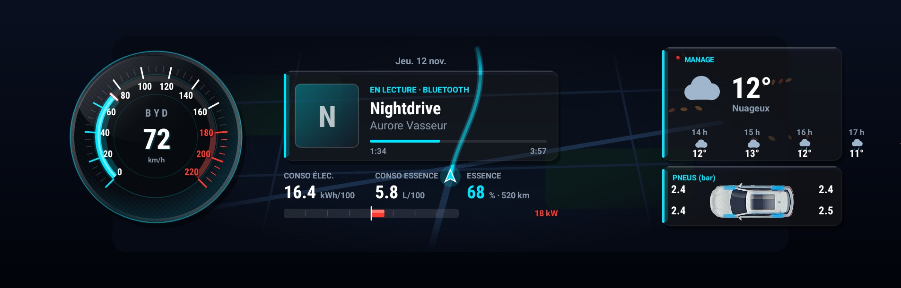
Aperçu
VEKTRA remplace l'affichage d'origine du combiné, derrière le volant, par un tableau de bord à soi.
De gauche à droite : la date, le compteur à aiguille gradué jusqu'à 220 km/h, la musique en cours quelle que soit l'application qui la joue, trois chiffres choisis selon le mode, la ligne de flux d'énergie dont le point central part vers la droite en rouge quand la batterie se décharge et vers la gauche en vert quand elle se recharge, puis la météo animée et la pression des quatre pneus en bar.
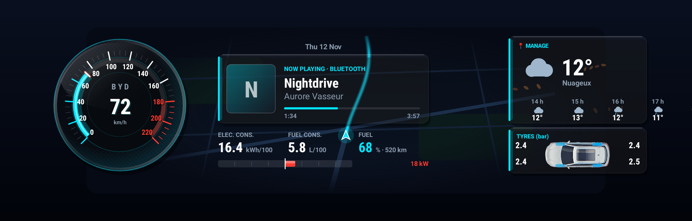
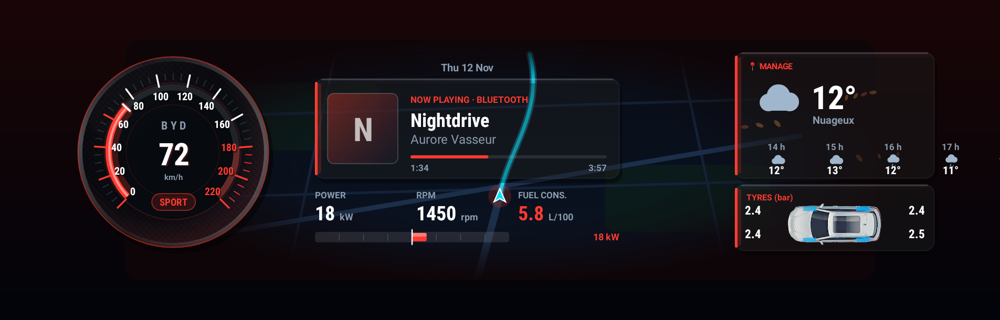
En Sport, l'ambiance passe au rouge, une pastille SPORT apparaît et les trois chiffres du bas changent : puissance, régime moteur et position de l'accélérateur, à la place des consommations et de la batterie.
Les widgets
Chaque thème se personnalise par la bulle 🧩 Widgets : on active, déplace et redimensionne ce que l'on veut voir — musique, consommation et batterie, météo animée, pression des pneus, Application (miroir d'applications en direct ou Navigateur Vektra), et la carte Info « qualité d'air » (PM2.5 intérieur et extérieur, température extérieure, altitude). Chaque valeur est lue de la voiture : valeur réelle ou « -- », jamais inventée.
Les captures de cette page sont dessinées par le code de la version publiée à chaque publication, avec des valeurs de démonstration. Elles ne peuvent donc pas montrer une version plus ancienne que celle proposée ici.
Les thèmes
La touche Thème ouvre le Theme Store et fait défiler les thèmes installés. Carbone 3D est le thème intégré par défaut et VektraUI l'autre thème intégré ; le thème Aston se télécharge en un geste. Le choix est retenu et revient à l'allumage.
Carbone 3D
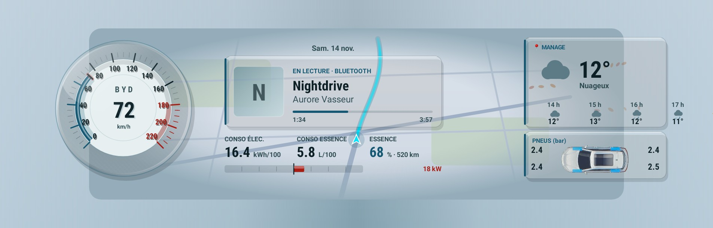
VektraUI
Chaque thème existe en sombre et en clair. Le fond clair reprend le bleu-gris de la surcouche BYD, mesuré sur photo, pour que l'application se fonde dedans au lieu d'y être posée. Le réglage Apparence choisit l'un, l'autre, ou suit la tablette.
Ce qu'il faut
- Un véhicule BYD équipé de DiLink 3.0 (13.1.32 et 13.1.33), DiLink 4.0 ou DiLink 5.0 / 5.1, reconnu automatiquement.
- La tablette doit accepter l'installation d'applications extérieures (sideload).
- Le débogage ADB en réseau actif sur la tablette, port 5555. VEKTRA s'y connecte en local, sur la tablette elle-même — rien ne sort du véhicule.
- Une connexion internet sur la tablette pour la météo et les mises à jour. Tout le reste fonctionne hors ligne.
Pourquoi l'ADB. Les commandes qui libèrent l'écran du combiné ne sont autorisées qu'à l'utilisateur shell d'Android. Une application ordinaire ne peut pas les envoyer. VEKTRA passe donc par l'ADB de la tablette, en local, pour obtenir ce droit.
Installation
- Télécharge le fichier de l'application depuis cette page, sur la tablette.
- Ouvre-le et accepte l'installation. Si Android refuse, autorise les « sources inconnues » pour le gestionnaire de fichiers utilisé.
- Ouvre VEKTRA. Au tout premier démarrage, l'écran d'accueil demande la langue, puis le modèle de ta voiture.
- Choisis ta langue puis ton modèle, en appuyant sur Continuer à chaque étape. L'écran principal s'ouvre.
- La première commande envoyée fera apparaître la demande « Autoriser le débogage USB ? ». Coche Toujours autoriser, puis accepte. Cette demande n'apparaît qu'une fois.
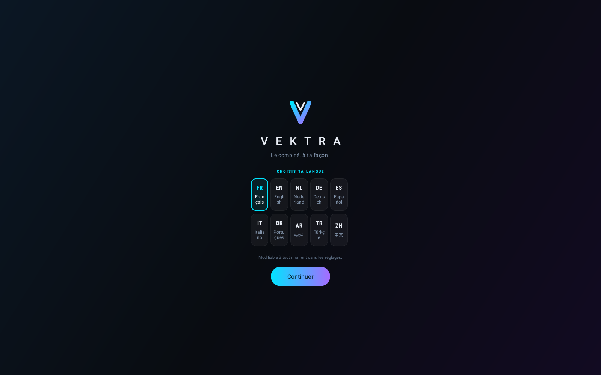
Dix langues sont disponibles : français, anglais, néerlandais, allemand, espagnol, italien, portugais du Brésil, arabe, turc et chinois.
Activer l'affichage
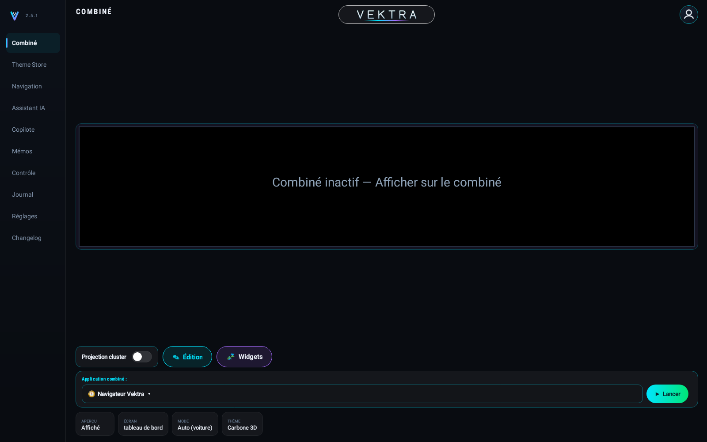
- Dans la section Contrôle, appuie sur Vérifier · ADB et diagnostic. C'est ce qui déclenche l'autorisation de débogage et confirme que la connexion fonctionne.
- Reviens sur Combiné et appuie sur Afficher sur le combiné.
- Le tableau de bord d'origine se met en veille, l'écran virtuel du combiné est créé, puis VEKTRA s'y affiche. L'opération prend une dizaine de secondes.
- L'aperçu au centre de la tablette montre en direct ce qui est dessiné derrière le volant. Le bouton Aperçu le replie si tu préfères un tableau d'état.
Pour revenir en arrière, appuie sur Revenir à l'origine : le tableau de bord BYD reprend la main. Si jamais il ne revient pas, coupe puis remets le contact.
Les autres touches
- Écran — choisit ce qui s'affiche sur le combiné : tableau de bord, données brutes ou calibration.
- Mode — laisse la voiture décider (Sport est détecté tout seul) ou force une ambiance pour un essai à l'arrêt.
- Thème — ouvre le Theme Store et passe au thème suivant à chaque appui.
Le rail de gauche
Le rail de gauche donne accès à toutes les pages de l'application : le combiné, le Theme Store, la navigation, le contrôle, le journal, les réglages et le changelog. Les quatre témoins du bas — ADB, combiné, musique, démarrage automatique — passent au vert dès que la fonction correspondante est en place.
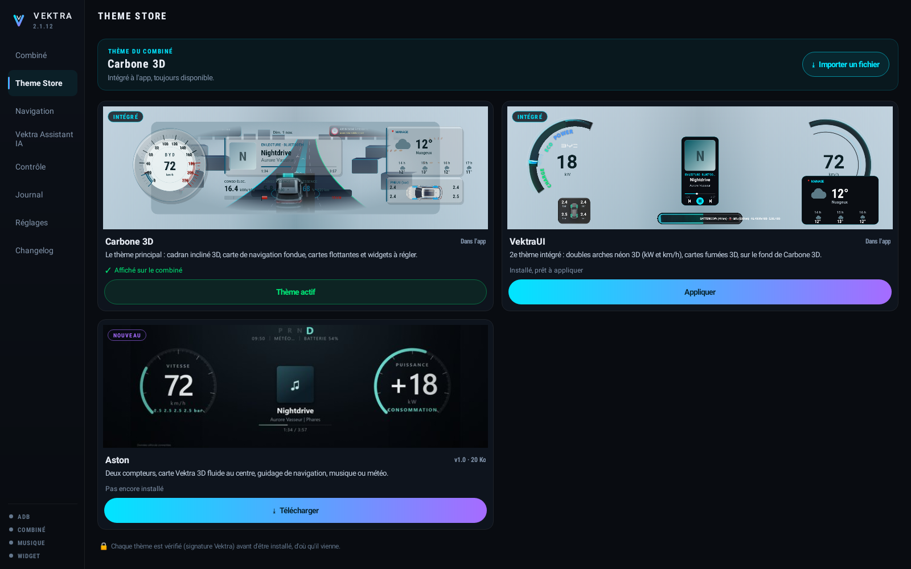
Theme Store
Le Theme Store réunit les thèmes intégrés (Carbone 3D, VektraUI) et ceux à télécharger (Aston). Chaque vignette est dessinée par le code du thème, pas une maquette, et un geste suffit pour l'appliquer au combiné.
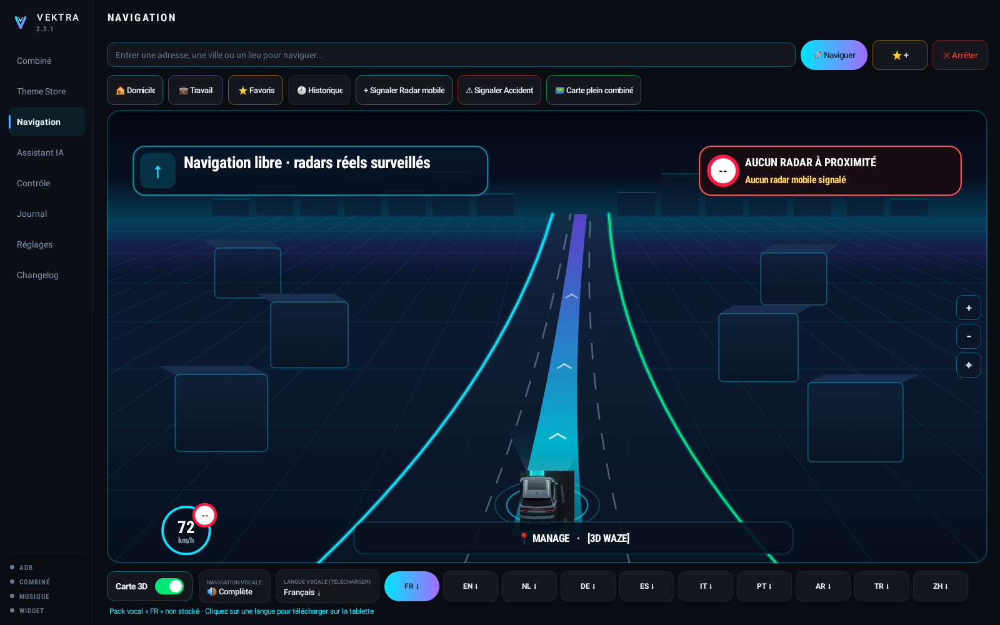
Navigation
Le widget Application permet de projeter n'importe quelle application de la tablette (Waze, Google Maps, musique…) en miroir interactif en direct sur le combiné, ou d'afficher le Navigateur Vektra intégré avec des bords fondus.
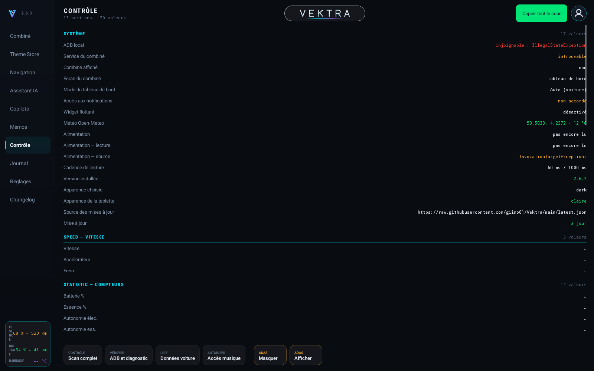
Contrôle
Cette page relève tout : les appareils du SDK de la voiture et les valeurs qu'ils renvoient, l'état de l'ADB, l'accès à la musique, l'alimentation du véhicule, la météo, la version installée et la source des mises à jour. Le bouton Copier tout le scan, en haut à droite, met l'ensemble dans le presse-papiers — c'est ce qu'il faut envoyer en cas de problème.
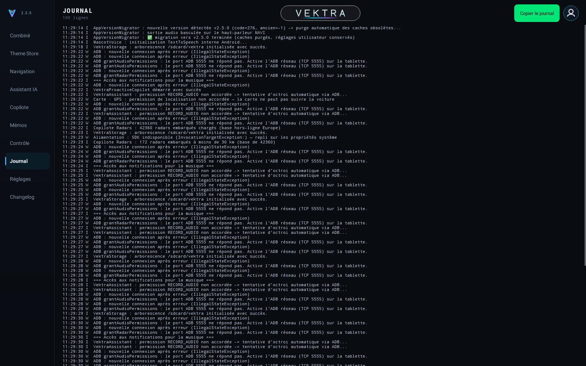
Journal
Chaque commande envoyée et chaque réponse reçue y sont écrites, dans l'ordre. Le bouton Copier le journal fait de même pour le texte entier.
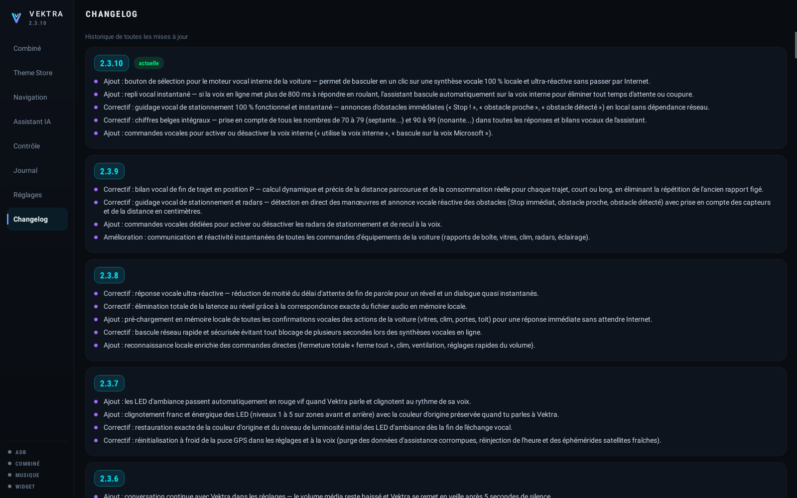
Changelog
La page Changelog reprend l'historique de toutes les mises à jour, version par version. Le texte suit la langue choisie dans l'application et vient du même journal des nouveautés que cette page — une seule source, toujours à jour.
Les touches du bas lancent les essais : diagnostic ADB, lecture des données de la voiture, et autorisation de l'accès à la musique.
Réglages
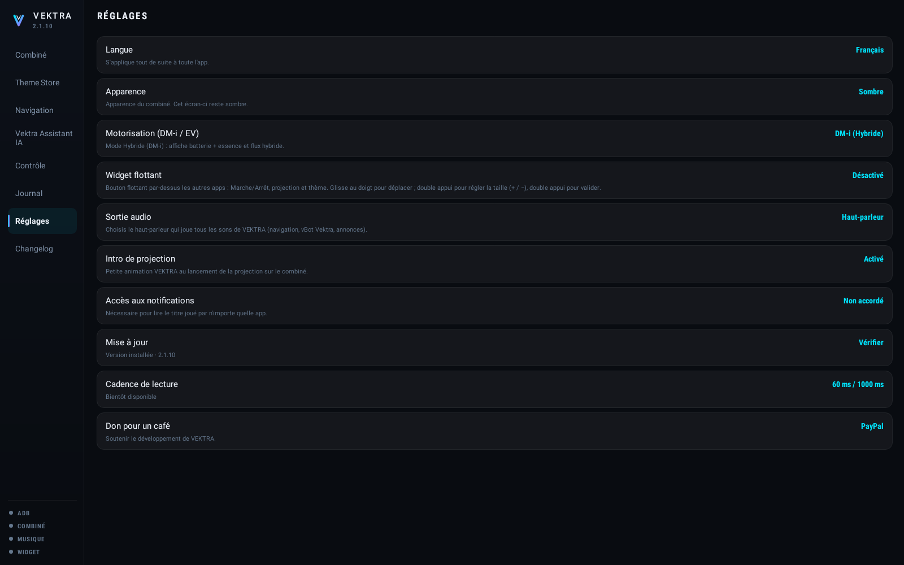
Musique
Pour afficher le morceau en cours, VEKTRA a besoin de l'accès aux notifications : c'est la règle d'Android pour lire les sessions audio. Appuie sur la ligne Accès aux notifications et l'application se l'accorde elle-même par l'ADB, sans rien effacer de la liste existante. Une fois accordé, le titre, l'artiste, la pochette et la progression s'affichent, quelle que soit l'application qui joue — radio, Bluetooth, ou une app installée.
Démarrage et arrêt automatiques
Quand ce réglage est actif, VEKTRA prend le combiné dès que la voiture est allumée et le rend dès qu'elle est coupée. L'état du véhicule est lu directement dans la voiture, une fois par seconde : 0 éteint, 1 accessoires, 2 contact mis. Une coupure doit être confirmée deux fois d'affilée avant que l'écran soit rendu — un seul hoquet de la voiture ne doit pas faire disparaître l'affichage en pleine route.
Apparence
Sombre, claire, ou automatique — l'apparence suit alors celle de la tablette. Le réglage ne concerne que le combiné : l'écran de la tablette reste sombre en toutes circonstances, c'est un poste de pilotage.
Source des mises à jour
L'adresse de la fiche de version. Elle se change sans recompiler : n'importe quel hébergement servant un fichier texte sans mot de passe convient. Par défaut, c'est cette page.
Mise à jour
VEKTRA vérifie toute seule à chaque ouverture. Quand une version est disponible, une fenêtre affiche les nouveautés et propose Plus tard ou Télécharger et installer. Si tu acceptes, l'application se télécharge, s'installe par-dessus et se rouvre seule.
Toutes les versions portent la même signature : une mise à jour remplace toujours la précédente sans qu'Android la refuse, et sans perdre les réglages.
En cas de souci
- Le combiné reste figé. Appuie sur Revenir à l'origine, puis réessaie. Si rien ne change, coupe et remets le contact.
- Aucune donnée, que des tirets. Le SDK de la voiture n'a pas répondu. La section Contrôle dit lesquels des appareils sont joignables.
- La musique ne s'affiche pas. L'accès aux notifications n'est pas accordé : voir plus haut. Vérifie aussi que quelque chose joue réellement.
- La mise à jour dit « Indisponible ». La tablette n'a pas joint la source. Vérifie sa connexion internet, puis réessaie : la raison exacte s'affiche.
- Autre chose. Ouvre Contrôle, appuie sur Copier tout le scan, puis envoie le texte. Il contient tout ce qu'il faut pour comprendre.
Nouveautés de la 2.4.9
- Correctif : suppression du double basculement (décochage puis recochage immédiat) du Switch de VEKTRA dans l'application native BYD (com.byd.appstartmanagement) grâce à une action unique par étape avec temporisation anti-rebond de 950 ms et vérification d'état stable avant fermeture.
- Correctif : activation matérielle complète des positions mémoire 1, 2 et 3 du siège conducteur ainsi que du Mode Repos / Mode Conduite (déclaration des permissions BYDAUTO_SEAT_*, BYDAUTO_CHAIR_* et BYDAUTO_COMFORT_* dans le Manifest, chargement des JAR framework BYD sous UID 2000 et invocation multi-contrôleurs Setting / Bodywork / Seat / Chair / Comfort).
- Correctif : suppression du blocage sur l'écran de chargement du widget Application sur le combiné et dans l'Aperçu (correction de l'arrêt prématuré du démon AdbVirtualDisplayDaemon, lancement automatique dès la sélection d'une application, et capture de secours matérielle screencap -d pour les applications OpenGL/SurfaceView comme Waze ou Google Maps).
- Correctif : traduction vocale 100 % native de l'Assistant Vektra et du Copilote dans toutes les langues (italien, anglais, allemand, espagnol, néerlandais, portugais, turc, arabe, chinois) sans phrases françaises résiduelles lorsque la langue de l'interface diffère de la langue vocale de l'Assistant.
- Ajout : thème d'interface « BYD Blade » avec logo officiel BYD vectoriel, carte de présentation avec photo/avatar dans le Profil Conducteur, lecture musicale directe sur YT Music Morphe par commande vocale, et mode « Aperçu : Interaction App » épuré avec injection tactile temps réel et clavier natif BYD.
Télécharger
Dernière version publiée, prête à installer sur la tablette.
VEKTRA 2.4.9 — télécharger l'applicationListe des commandes vocales
Toutes les phrases que comprend Vektra Assistant, dans la langue de ton choix.